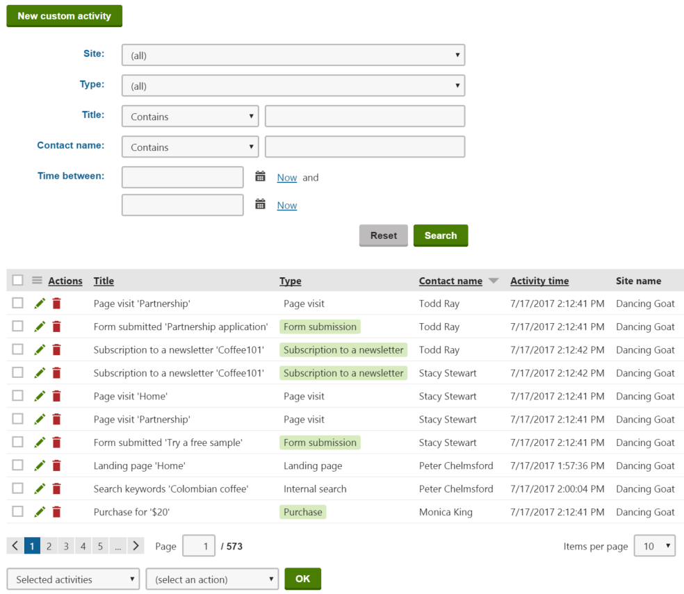

Viewing contact activities
Once you have enabled tracking of activities, you can monitor the activities of your contacts in the Contact management application on the Activity log tab.
The activity log shows you which actions your visitors have performed, such as page visits, form submissions, newsletter subscriptions or product purchases. You can filter the list according to the activity type or title, the contact who performed the action, the date when the action occurred, or the site on which the activity occurred.

Highlighting activity types with colors
If you want to easily spot the important activity types in a list of activities, ask your administrator to specify the activity type color when editing or adding activity types.
Tip: To view the activities of a specific contact:
Open the Contact management application on the Contacts tab.
Manage (
 ) the given contact
) the given contactSwitch to the Activities tab.
Kentico EMS required
Features described on this page require the Kentico EMS license.
Viewing activity details
Every activity record stores additional details related to the logged event. To see the details of a specific activity:
Open the Contact management application on the Activity log tab.
Click Edit (
 ) next to the given record.
) next to the given record.The following activity details are available:
General information
Activity type
The type of the activity.
Activity title
The activity's title contains basic information about the event. The default text depends on the activity type.
You can manually edit this field.
Contact name
The name of the contact associated with the activity. Click
 to view and edit the contact's details.
to view and edit the contact's details.Activity date
The date and time when the activity occurred.
Activity URL
The URL of the page where the activity occurred.
You can manually edit this field.
URL referrer
The URL from which the contact, who performed the activity, came to the page.
You can manually edit this field.
Activity site
The website where the activity occurred.
Activity comment
Comment
Any additional information related to the activity, either as plain text or with basic formatting.
Click Insert timestamp to insert your timestamp into the comment. The default stamp contains the full name of your user account and the current date and time.
Click Save & Close to confirm any changes.
Removing activity records from the activity log
To permanently remove activity records, click Delete ( ) next to individual items in the activity log.
) next to individual items in the activity log.
You can remove multiple records using the options below the activity list:
Choose which activities to delete:
All activities
Selected activities – mark specific activities using the check boxes on the left side of the list.
Select the Delete action.
Click OK.